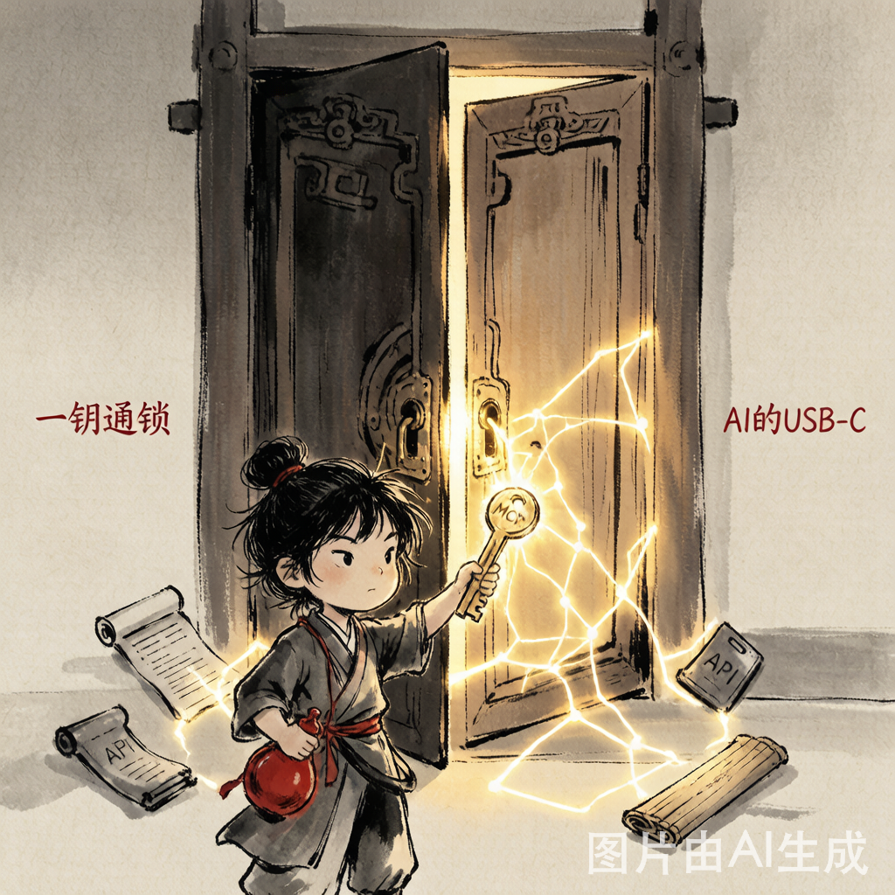
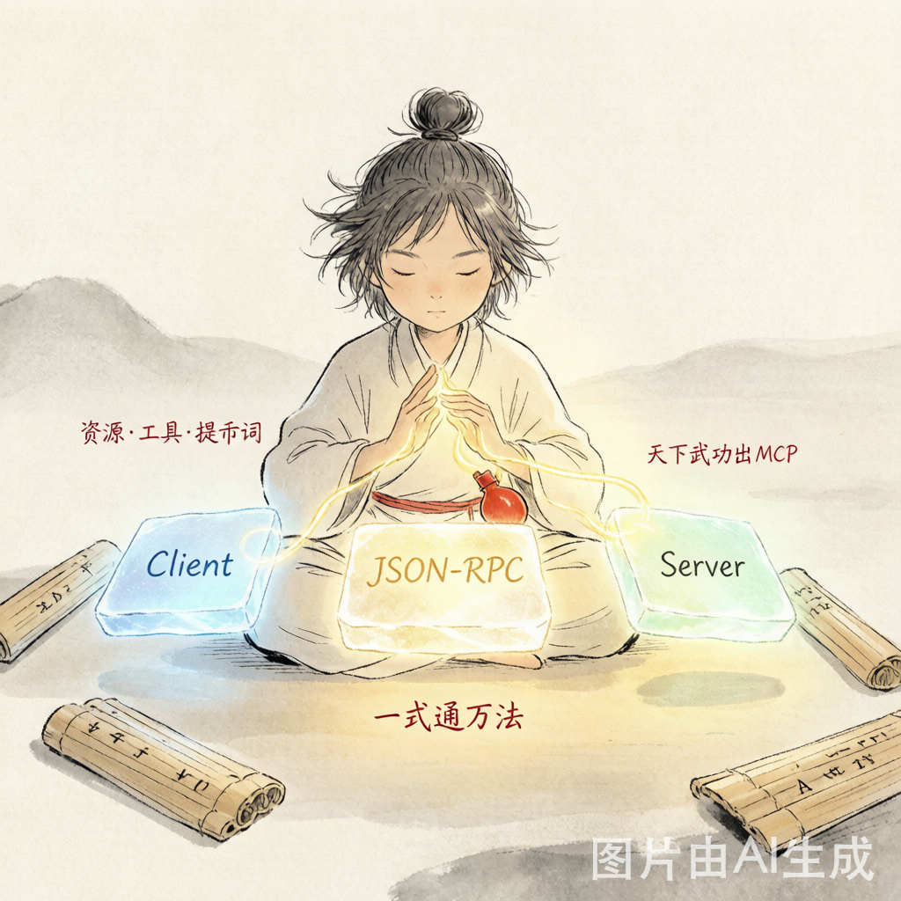
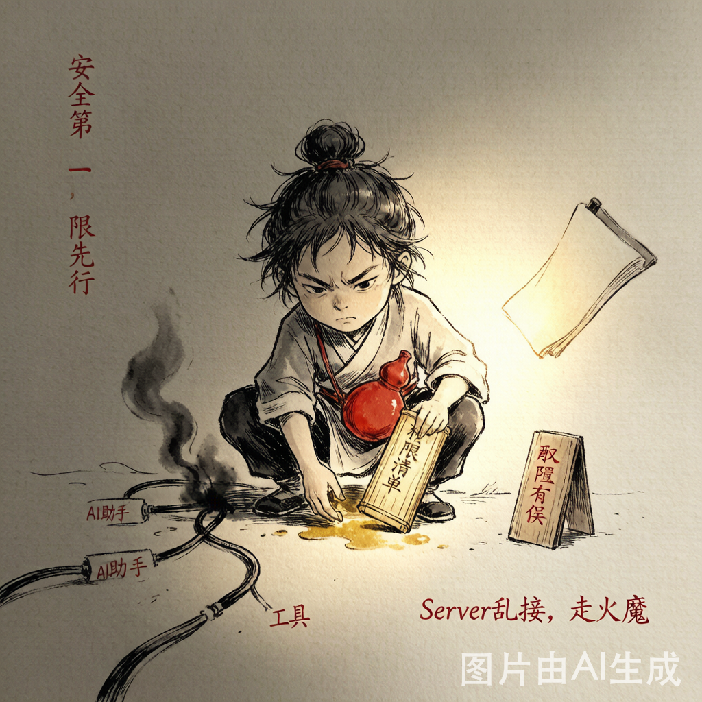

MCP 协议：AI江湖的驭器总诀
一套心法，降服天下兵刃——AI模型与外部系统交互的标准化通用协议，2024年横空出世，如今已成AI Agent的新基建。
MCP（Model Context Protocol），是AI大模型的"万能传音入密"——一套统一的开放协议，让你家AI不用懂每个工具的私有接口"方言"，只需会这一种"通用切口"，就能跟任何数据库、API、文件系统自由对话。它是 Anthropic 于2024年底开源的开放标准，现已移交 Linux Foundation 旗下 Agentic AI Foundation 治理。

江湖上各门各派都有自己的独门暗号。少林派说"阿弥陀佛"，武当派喊"无量天尊"——你要跟所有门派沟通，得学所有暗号，累死人！MCP就是武林盟主颁布的"万象通语令"：从今天起，全武林只说一种通用切口。你学到这套心法，推开任何一扇门，对方都能听懂你的来意。
- 2024年末 · 横空出世 Anthropic发布MCP开源协议，欲终结AI工具调用的"方言时代"，业界震动
- 2025年11月 · 盟主接印 正式移交Linux Foundation旗下Agentic AI Foundation治理，各路豪杰纷纷入盟
- 2026年 · 一统江湖 Claude/ChatGPT/VS Code/Cursor全面原生支持，成为AI Agent的"新基建"
| MCP 协议 | Function Calling |
|---|---|
| 标准化程度一套定义，处处通用，跨平台复用 | 标准化程度各家厂商各写一套，OpenAI/Anthropic/Google互不兼容 |
| 通信方式Server可反向调用LLM（Sampling），双向通道 | 通信方式单向——只有AI可以调工具，无反向能力 |
| 生态复用一个Server一次开发，所有兼容平台通用 | 生态复用每个平台单独开发适配，重复劳动 |
| 治理归属Linux Foundation开放治理，社区驱动 | 治理归属厂商私有协议，命运绑定单一公司 |
江湖规矩：不是兵多就行，是统一号令才强。选MCP这套总诀，你写一个Server = 同时接入几十个AI平台，省你写N次接入代码的苦修。

核心步骤：初始化握手 → 能力协商 → 工具调用 → 结果返回。四步走完，AI就能操控外部系统了。
运功要点：protocolVersion 必须精确匹配，否则服务器直接拒绝连接。Transport 支持两种模式——stdio（本地进程通信，极快）和 HTTP+SSE（远程调用，跨网络）。本地开发首选 stdio，生产环境切 HTTP+SSE。

权限太大，Server变"内鬼"！MCP Server跑起来后拥有宿主机权限，如果代码有漏洞或被篡改，AI调它读文件的同时可能把敏感数据也泄露出去了。务必沙箱隔离、遵循最小权限原则！
协议还嫩，迭代踩坑！2024年底才发布，API breaking change时有发生。升级一次踩一次坑——建议锁定 protocolVersion 到你的 Server 测试过的版本。
Server太多，网络延迟卡成PPT！多Server协作时请求多次转发，每个环节都是延迟点。关键路径尽量走本地 stdio，别在远程链路上来回折腾。
用官方或社区认证的 MCP Server，别随便安装来历不明的 Server 包——你可能给了一个陌生人你家钥匙。
MCP不是银弹——你的 Server 质量决定了 AI 的表现。垃圾 Server = 垃圾AI体验。写 Server 时用充足的测试和错误处理，别让 AI 拿到错误信息后胡说八道。
 扫码关注
扫码关注